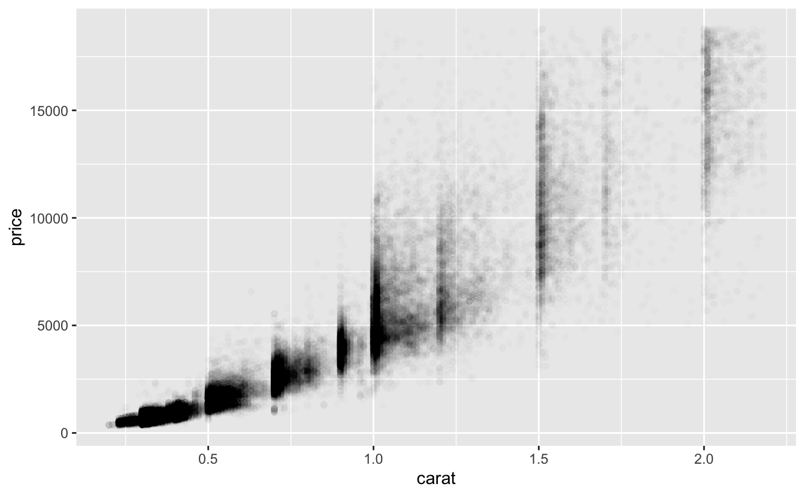
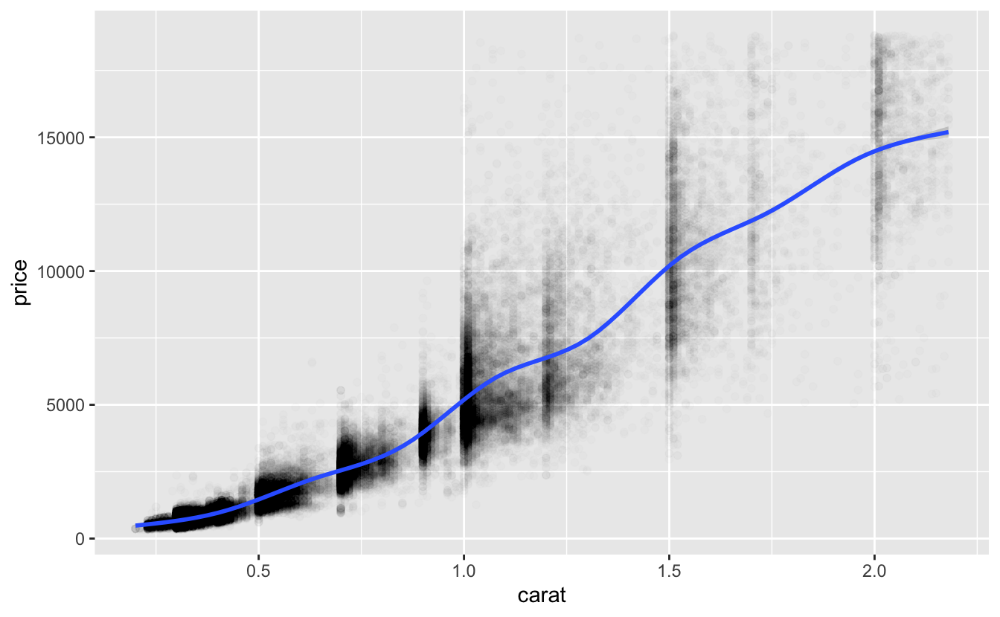
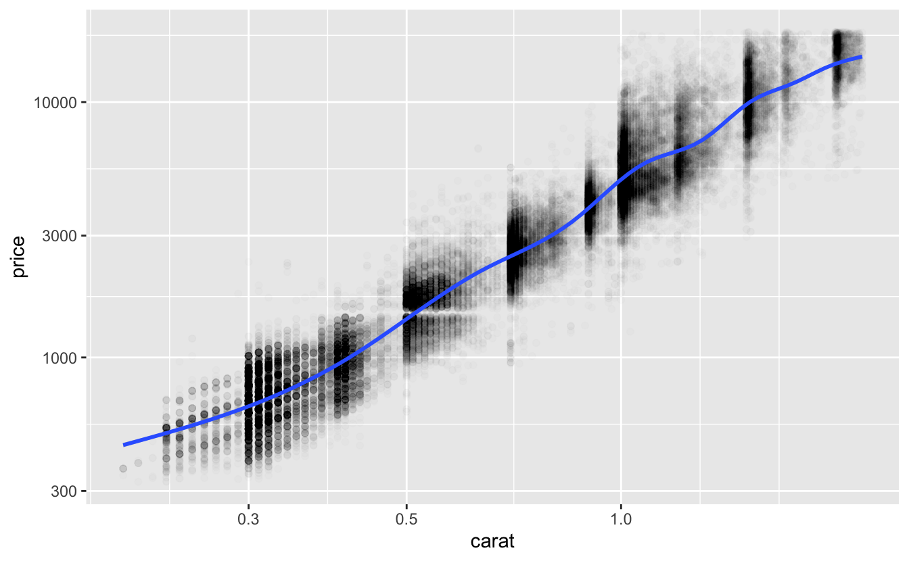
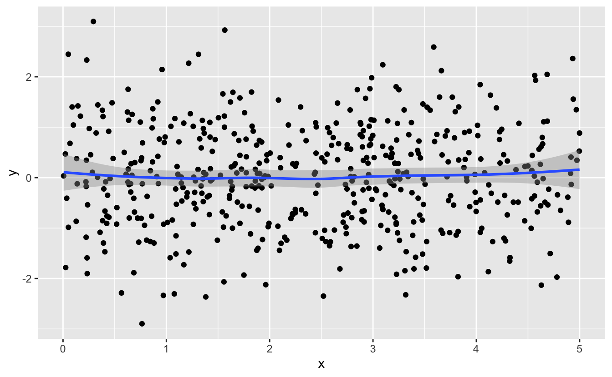
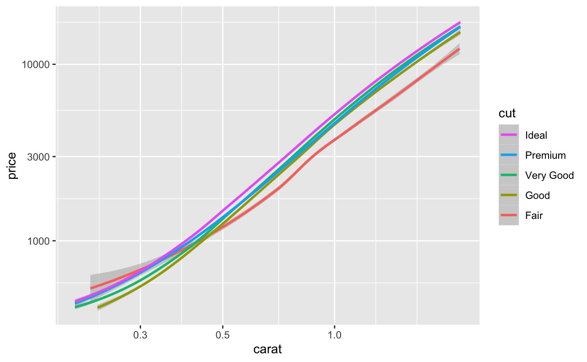
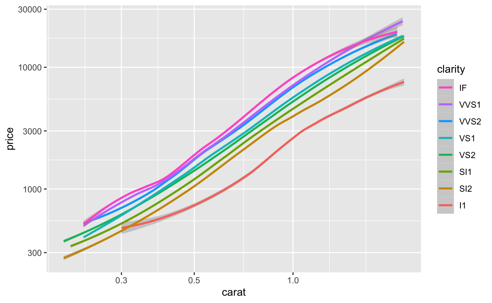
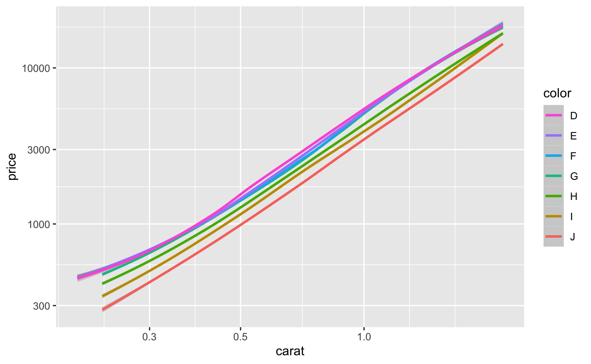
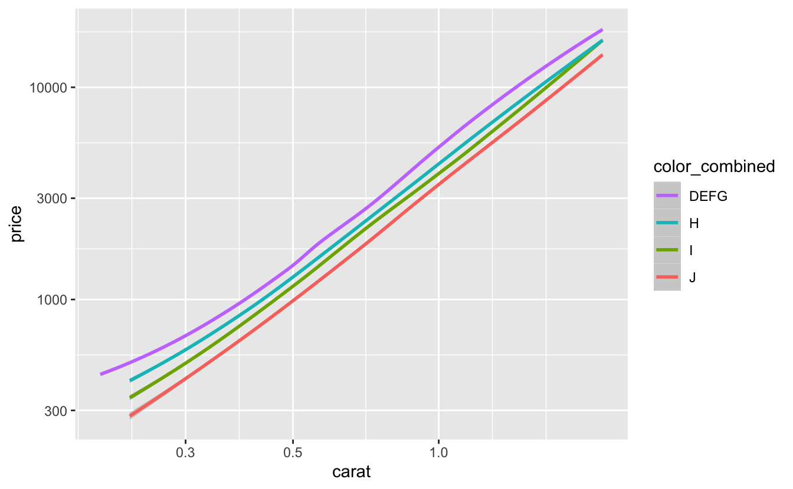

3 Determine functional form
library(tidyverse)In Chapter 1, we mentioned that a first step to building a model is to explore your data and choose an appropriate function family. This chapter focuses on this step. Using diamonds, we’ll explore the relationship between price and the four Cs: carat, clarity, color, and cut. By the end of the chapter, we’ll understand which function family or families might approximate this data well.
3.1 Formulas
In Chapter 1, we mentioned that the modeling function lm() requires two arguments: a function family and data. With lm(), like many modeling functions, you specify the function family using a formula.
Our model from Chapter 1 belonged to the family with the form
y = a_0 + a_1 * x_1
where y is the response, x_1 is a continuous variable, and a_0 and a_1 are parameters to be determined. Recall that a_0 is the intercept and a_1 is the slope.
This function family is specified with the formula
y ~ x_1 .
You place the name of the response variable to the left of the ~ and the predictor variable(s) to the right of the ~. The general form for the formula of a linear function of n variables is
y ~ x_1 + x_2 + ... + x_n .
Formulas are their own class of R object, and you specify them unquoted.
y ~ x_1
#> y ~ x_1
class(y ~ x_1)
#> [1] "formula"You don’t need to explicitly specify an intercept term as it will be included by default. If you don’t want an intercept term, add a 0 to your formula.
y ~ 0 + x_1
We’ll now see how to explore and understand the suitability of modeling your data with linear functions.
3.2 Continuous predictors
Let’s start with continuous predictors, as they should be familiar after reading Chapter 1.
In Chapter 2, we modified diamonds quite a bit. Here are all of those modifications in one place:
df <-
diamonds %>%
filter(x > 0, y > 0, z > 0) %>%
filter(y < 20, z < 10) %>%
filter(carat <= quantile(.$carat, probs = 0.99)) %>%
mutate(color = fct_rev(color))Now, we can visualize the relationship between carat and price and look for a linear relationship.
df %>%
ggplot(aes(carat, price)) +
geom_point(alpha = 0.01)
The larger diamonds cover a wide range of prices, so we’ll add a smooth line to show the central tendency.
df %>%
ggplot(aes(carat, price)) +
geom_point(alpha = 0.01) +
geom_smooth()
Notice how price, especially for the larger diamonds, varies substantially among diamonds of the same size. This variation suggests that carat is not the only variable that influences price. From the smooth line, we can also see that the relationship between carat and price is positive, but not linear. Luckily, we can still use a linear model by first transforming the data. We’ll talk more about transformations next.
3.2.1 Transformations
Power law relationships take the form
y = c * x^d
where c and d are both constants. Taking the log of both sides gives us
log(y) = log(c) + d * log(x)
which might look familiar. Power laws are linear in terms of log(y) and log(x), which is even clearer if we replace log(c) with a_0 and d with a_1.
log(y) = a_0 + a_1 * log(x)
Phenomena that follow power laws are common. You can determine if your data approximately follow a power law by plotting your data using log scales for the x and y axes and then visually checking if the relationship is linear.
df %>%
ggplot(aes(carat, price)) +
geom_point(alpha = 0.01) +
geom_smooth() +
scale_x_log10() +
scale_y_log10()
The smooth line is now linear, suggesting that the functional form log(price) = a_0 + a_1 * log(carat) will approximate the relationship between price and carat well.
To specify this function family in a formula, we can apply the log() transformations in the formula:
log(price) ~ log(carat) .
Log-log transformations are common, but you can apply any transformation (to your response, predictor, or both) that makes your data linear.
You might wonder why you should bother transforming your data instead of just fitting a nonlinear model. Linear models are generally simpler, easier to interpret, and often produce better approximations.
3.2.2 Visual checks
carat is the only continuous variable of the four Cs, but other datasets will have multiple possible continuous predictors. Here are two features to check for when considering adding a continuous predictor to your model.
First, as you’ve already seen, the relationship between the predictor and the response should be linear. If necessary, transform the data so that the relationship is linear. If the relationship is nonlinear and you can’t find a transformation that makes it linear, don’t add the predictor to your linear model.
Second, the predictor should influence the response. In our visualization of price and carat, we noticed that price increased as carat increased. If the predictor does not influence the response, you might see something like this:

The smooth line is horizontal, which tells you that y does not change with x.
The diamonds data is relatively simple, and we’ve made it even simpler by restricting attention to the four Cs. When you have more variables, you’ll need to conduct more preprocessing and pay more attention to which variables to include and which to exclude. If you’d like to learn more, a good resource is Kuhn and Johnson, Feature Engineering and Selection, particularly the Preprocessing section.
3.3 Discrete predictors
Earlier, we noticed that price varies substantially for diamonds of a given carat. In this section, we’ll investigate how the three discrete Cs, clarity, color, and cut, influence price.
3.3.1 Functional form
Discrete predictors work differently than continuous predictors. When a linear model includes a discrete predictor, a different constant will be added for each value of the variable.
We’ll visualize the effect of cut by adding a smooth line for each value to our plot of price vs. carat. We’ll leave off the individual points to focus on the trends.1
plot_smooth <- function(var, data = df) {
data %>%
ggplot(aes(carat, price, color = {{ var }})) +
geom_smooth(method = "loess", formula = y ~ x) +
scale_x_log10() +
scale_y_log10() +
scale_color_discrete(guide = guide_legend(reverse = TRUE))
}
plot_smooth(cut)
The smooth lines look linear, and all appear to have similar slopes but different intercepts, which increase as cut quality increases. This suggests that the following functional form, in which the intercept of the line depends on cut, would approximate our data well.
log(price) = a_0 + a_1 * log(carat) + f_cut(cut)
We need f_cut() to return a different constant for each value of cut. We can write f_cut() in R using case_when().
f_cut <- function(cut) {
case_when(
cut == "Fair" ~ 0,
cut == "Good" ~ a_cut_Good,
cut == "Very Good" ~ a_cut_Very_Good,
cut == "Premium" ~ a_cut_Premium,
cut == "Ideal" ~ a_cut_Ideal
)
}Note that the constant for Fair is 0. Fair is the worst quality cut and the lowest factor level of cut. By convention, the lowest factor level’s constant is added to a_0, so we don’t need a a_cut_Fair. The rest of the constants are then created relative to this lowest value.
In formula syntax, this functional form is
log(price) ~ log(carat) + cut
In the next section, we’ll visualize clarity and color and discuss visualizing discrete predictors in more detail.
3.3.2 Visual checks
Now that you understand the form of f_cut(), we can be more precise about what to look for when visualizing a potential discrete predictor. Assume you created a visualization like we did above, with a continuous predictor on the x-axis, the response on the y-axis, and a smooth line for each value of the potential discrete predictor. Here’s a set of characteristics to check for:
The smooth lines should all be approximately linear.
For a linear function to approximate the relationship well, each of the smooth lines needs to be linear.
The smooth lines should all be approximately parallel to each other.
In our example, the slopes of the lines depend only on our continuous predictor:
log(carat). Changingcutdoes not change the slope. Non-parallel smooth lines suggest that slope depends on both the continuous predictor and the discrete predictor. This is called an interaction. Interactions aren’t part of the set of function families we’re looking at in this chapter, so we won’t talk more about them here.The smooth lines should have different intercepts.
Smooth lines that are stacked on top of each other and don’t have different intercepts suggest that the discrete variable doesn’t influence the response.
cut met all three of our criteria pretty well, although the Premium and Very Good smooth lines are very close together.
plot_smooth(cut)This overlap suggests that there isn’t much of a price difference between Very Good and Premium diamonds.
Next, let’s look at clarity.
plot_smooth(clarity)
clarity also mostly meets our criteria, although two of the levels (VVS1 and VVS2) are again very close together.
The slope of the line for I1 also looks a bit different than the rest. However, only 1.28% of diamonds are I1, so it will be okay if our linear model doesn’t approximate them as well as other diamonds.
Finally, we’ll look at color.
plot_smooth(color)
color also meets all three of our criteria pretty well. Again, some of the smooth lines (D, E, F, and G) are almost entirely on top of each other, suggesting that increasing quality above G does not influence price very much. We could try combining D, E, F, and G into one level.
df %>%
mutate(color_combined = fct_collapse(color, DEFG = c("D", "E", "F", "G"))) %>%
plot_smooth(color_combined, data = .)
The smooth lines are now more clearly separated. Later, when we fit our models, we’ll compare models that combine nearby factor levels to models that use all the original values.
The separation between the smooth lines varies between clarity, cut, and color. The larger the separation between smooth lines, the more that variable influences price. So clarity likely influences price the most, followed by color, then cut.
3.4 Summary
From our EDA, we now know that:
- We need to log-transform both
priceandcaratto make the relationship linear. clarity,color, andcutall influenceprice, and we can add any of them to our model.clarityis the most important of the three discrete Cs, followed bycolor, thencut.- Increasing the quality of the color beyond G doesn’t influence price very much. We could experiment with combining the top levels of
colorinto one level before fitting our model.
Even though carat, clarity, color, and cut all influence price, we shouldn’t necessarily add them all into our model. In the next chapter, we’ll explain how to fit a model for a given function family. Then, in the following chapter, we’ll discuss the trade-offs involved in adding additional predictors to models, and we’ll explain how to choose between different models.
Note that we used
method = "loess"instead of the defaultmethod = "gam"."loess"can take more time and memory for large amounts of data, but often gives better results. For more information, see https://dcl-data-vis.stanford.edu/continuous-continuous.html#smoothing .↩︎